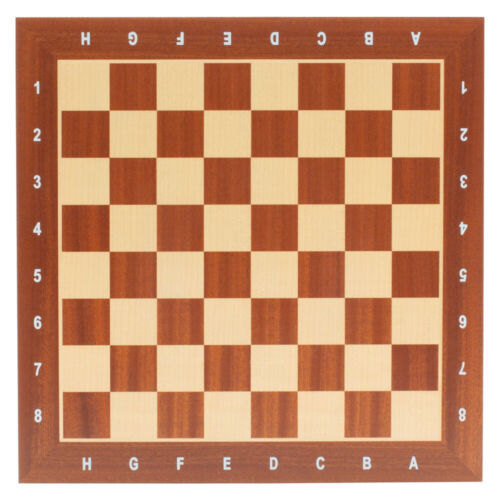
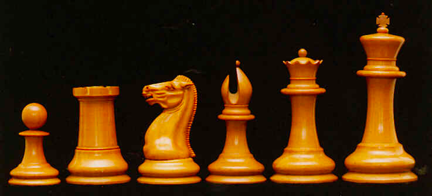
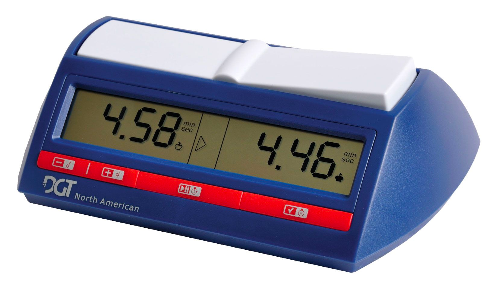

Home Page

Learn all about chess here!
This website is about chess! Most people don't give too much thought to the game, but it is certainly one of the most deep and interesting games ever created. For hundreds of years, people all throughout history have discussed strategies and techniques to improve.
This website gives a small sample of some of the common discussions that surround the game. Here, we discuss different aspects of the game, including its rich history and exciting current events. We review some tournaments and game equipment.
To play the game there are three things you need:
A chess board
This can be made out of a few materials. The nicest quality material is Wood, but it is also the most expensive. More common materials are vinyl and leather. They come in many different colors and sizes, but all display a checkerboard pattern.
Chess pieces
These can also be made out of several materials. Like the boards, wooden pieces are often the best quality. Other materials can be plastic which is the most common and rubber. These pieces are almost exclusively white and black.
A chess clock
Although not strictly necessary to play a chess game, keeping track of time can determine the pace of the game. Usually players play differently depending how much time there is left, so keeping the time can make the game go faster or slower. Clocks have much less variation than the pieces or boards, so most of them look quite similar to each other. The biggest difference between different clocks is their build quality and features.